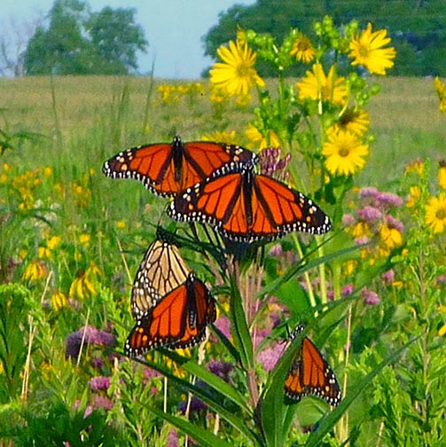
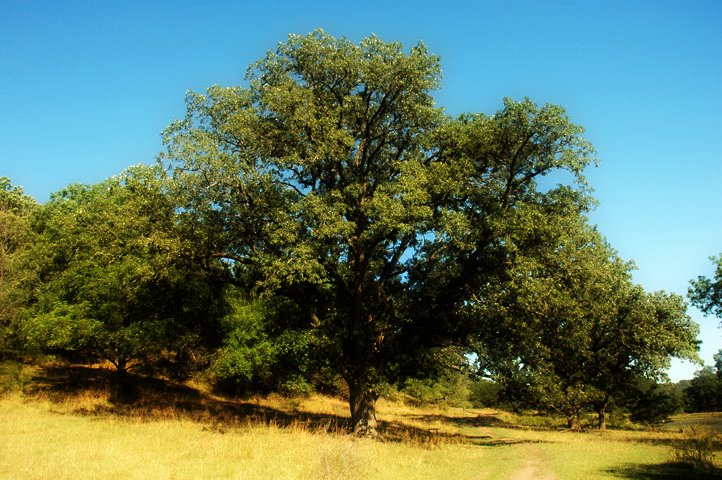
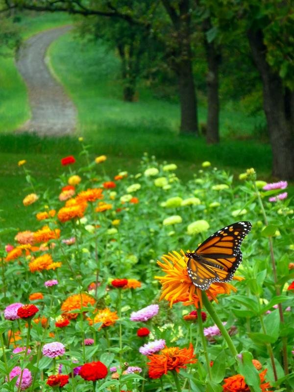
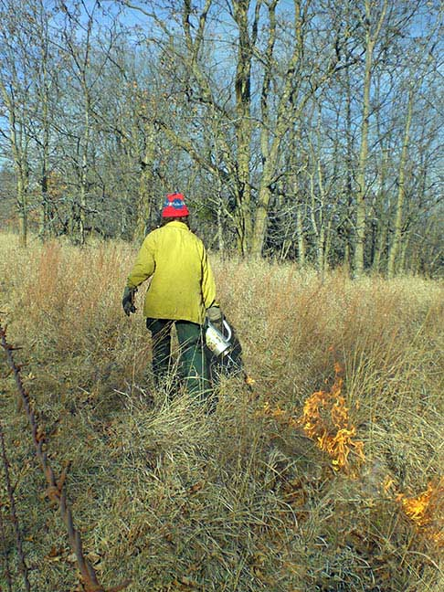

YOU MAKE THE DIFFERENCE
Whiterock Conservancy is a 501(c)(3) nonprofit land trust established to protect and steward more than 5,000 acres of irreplaceable Iowa river-valley land. Your gift is extremely important to Whiterock because it provides resources that make an immediate impact - whether you make your commitment annually - a monthly sustaining gift - or honor a loved one with a tribute or memorial gift. Your contributions make our work possible. Your support enables Whiterock Conservancy to continue building on the success of our restoration and conservation projects to date. We're working to make a lasting difference for nature and people - for today - and for future generations.
Whiterock Conservancy 1390 Highway 141 Coon Rapids, IA 50058 |
Thank You for Your Support!

Monthly Giving
You Can Make a Difference!
through monthly or periodic giving.
Become a Monthly Donor
You can help Whiterock Conservancy focus more effectively on critical conservation projects when you make a monthly gift today. Friends of Whiterock Conservancy is a special group of our most dedicated monthly supporters, caring people just like you.
When you become a Friend, your monthly gift will provide a reliable stream of support that is so vital to protecting Iowa's lands and waters. You can use our safe and secure online form to join Friends of Whiterock Conservancy today. It's easy and here is how it works:
|
Your monthly gift is extremely important to Whiterock Conservancy because it provides resources that make an immediate impact. Join now! You are providing a reliable and stable flow of support for our critical conservation work through your monthly giving.
Return to top of page
Memorials and TributesFor those you care about... |
 |
Your donation helps us while you recognize and honor your designee.
When you honor the memory of a loved one and make a memorial gift to Whiterock Conservancy, you'll have the satisfaction of knowing your gift will help to provide a lasting legacy for Iowa's natural landscape now and for future generations to enjoy. Give a gift that will truly be meaningful. Make a Memorial Gift!. Complete our secure and online donor form and in the Special instructions or comment box please let us know this is a memorial, the name of the person you are memorializing, and the name and address where you would like the acknowledgement sent.)
You can recognize someone special, commemorate a milestone or celebrate a special occasion, such as an anniversary, retirement, wedding or birthday, when you make a safe and secure honorary tribute gift. A gorgeous nature note card will be sent to announce your gift. Make your Honorary Gift today! Complete our secure and online donor form and in the Special instructions or comment box please let us know this is an tribute gift, the name(s) of the person you are honoring, the special occasion (if any) for the tribute, and the name and address where you would like the notification sent.
Return to top of page
Matching GiftsDouble the impact of your gift! |
 |
by asking your employer to match your donation.
Many employers will match your donation to the Whiterock Conservancy - meaning that your gift has double the impact. This doubles our ability to provide sustainable outdoor recreation with the intention of helping the public reconnect with the outdoors by having fun on, and learning about, Iowa's diverse landscape. Matching your gift is easy. Simply donate to Whiterock Conservancy using this link, and check with your employer to see if your company will match your gift. Most companies ask you to complete and return a short form which may require Whiterock Conservancy's tax identification number, which is 27-0110952. Other companies give you a form to send to us noting your gift and we complete a portion of the form which we send back to your company.
Return to top of page
Gifts Through Your WillBequests |
 |
by making a gift through your estate plans.
Make a Gift for the Future
A bequest is one of the simplest ways to support Whiterock Conservancy. These thoughtful gifts ensure that Whiterock - one of the 10 largest unbroken tracks of publicly accessible land bases in all of Iowa - remains accessible for future generations to experience and discover native, restored, and working Iowa landscapes. If you have included Whiterock Conservancy in your will or estate plans, or if would like more information about how to do so, please contact us by email at development@whiterockconservancy.org or by calling (712) 684-2964 ext. 115.
Return to top of page
Gifts of AssetsGiving Options with Whiterock Conservancy |
 |
can help protect the Iowa lands and waters you care about.
For any of the following forms of gifts, please contact our development office at 712-684-2964 ext. 115 for their assistance.
Appreciated Securities
Donating appreciated stocks, bonds or mutual funds is quick and simple and may provide you with significant tax benefits.
Life Insurance Gifts
Name Whiterock Conservancy as a beneficiary of your life insurance policy and save on estate taxes. You can provide now for a future gift to Whiterock Conservancy by naming us as beneficiary of a policy insuring your life. At death the proceeds are paid to Whiterock Conservancy, and we apply them to the program you have designated.
Gifts of Personal Property
Donate books, artwork or equipment to support restoration and conservation efforts at Whiterock Conservancy and save on taxes. See our published Wish List for our current equipment needs.
Gifts of Real Estate
Donate residential, commercial or undeveloped real estate and provide support for conservation while saving on taxes and reducing responsibilities associated with property ownership.
Return to top of page
1390 Highway 141, Coon Rapids, IA 50058 | 712-684-2697
Whiterock Conservancy, a private, 501(c)(3) land trust, providing sustainable agriculture,
conservation, outdoor activities and recreation and environmental education.